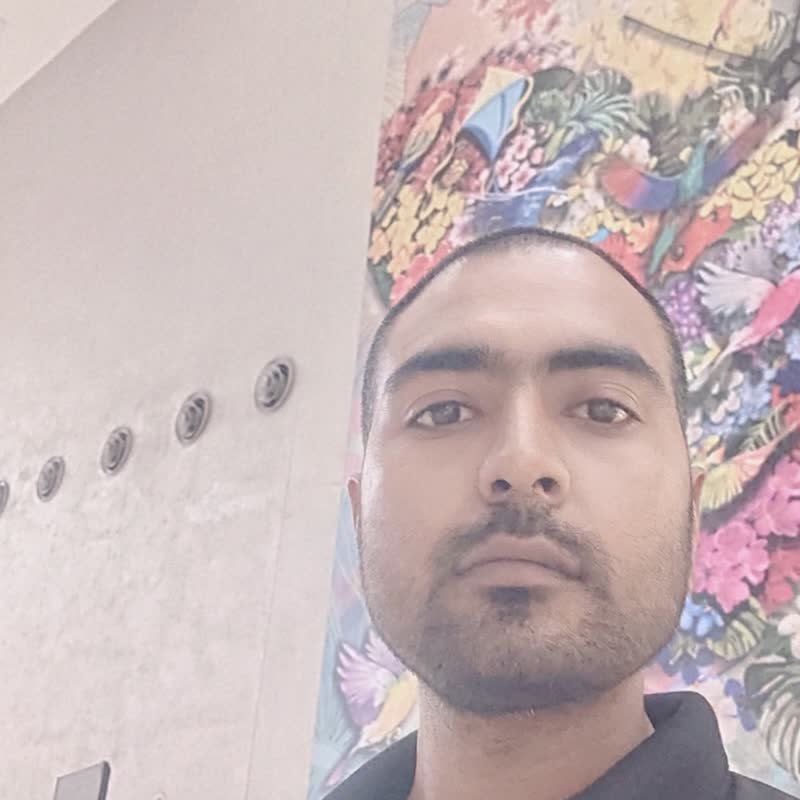

अजय काकराना रोहतक, हरियाणा के काकराना गाँव से हैं। उनके बड़े-बुज़ुर्ग सोनीपत के पाई गाँव से थे, इसलिए काकराना में उनका परिवार "पाई वाले" के नाम से जाना जाता है और वे Ajay Pai Wala के नाम से भी पहचाने जाते हैं।
वे एक बायोमेडिकल लैब तकनीशियन हैं और डिजिटल कंटेंट बनाते हैं। उनके YouTube चैनल हरियाणा gk पर सरल हिंदी में पाठ, क्विज़ और पढ़ाई के वीडियो मिलते हैं।